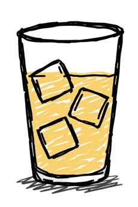
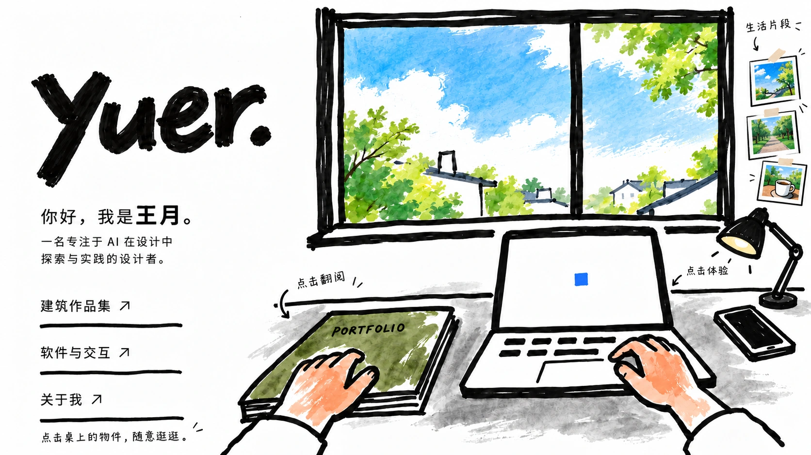
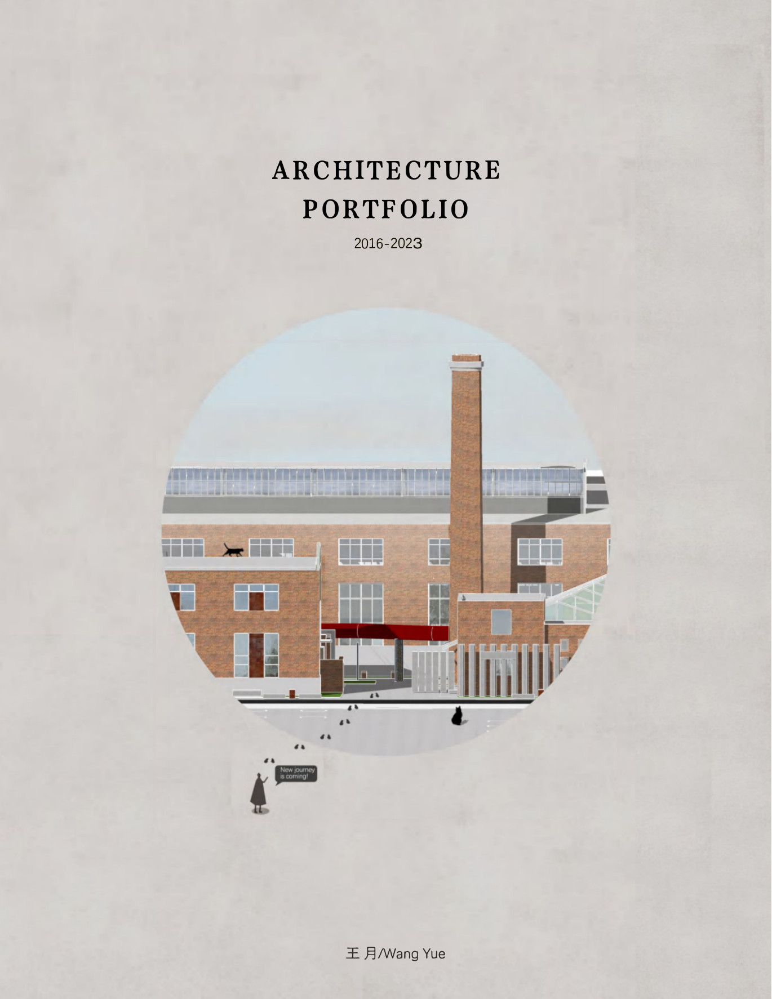
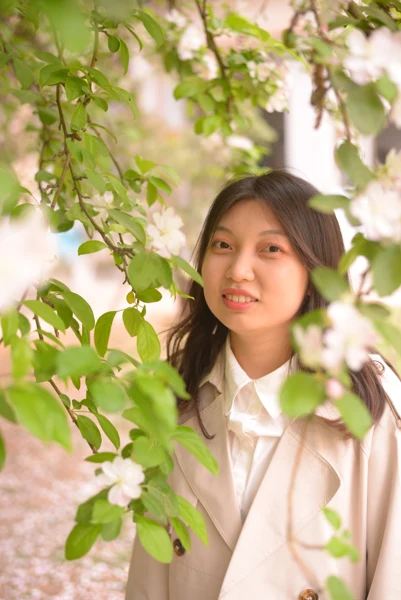
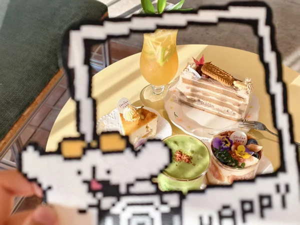
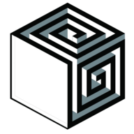

一名专注于 AI 在设计中探索与实践的设计者。
欢迎来到我的窗边工作台。这里有画在纸上的空间，也有发生在屏幕里的想法。



点击图片可放大查看 · ← → 键翻页
从建筑空间到屏幕里的交互，我喜欢把想法做成可以被看见、被体验的东西。
在空间与屏幕之间，慢慢做些有意思的事。
书本，是纸上的空间。电脑，是可以亲手体验的想法。希望你在这里，像坐到窗边一样自在。


← → 切换照片 · Esc 返回工作台
一些随身的，有意思的想法。

点开图标，随意逛逛。 ↗